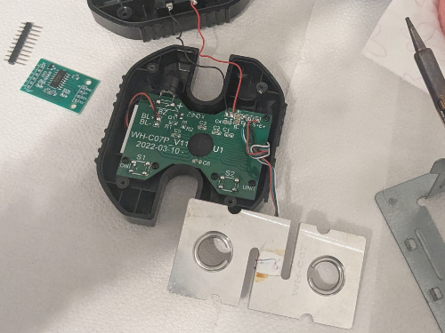
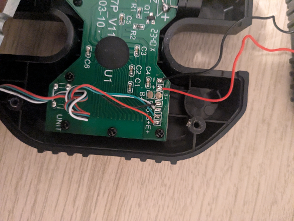

Making Your Own Crimpdeq
-
Required Materials
- ESP32-C3-DevKit-RUST-1
- Other ESP32 devices can be used, but you need to figure out how to charge the battery
- Battery Holder
- 18650 Battery
- Other batteries might also work, as long as they can power the device
- Crane Scale or Amazon alternative
- Other crane-scales might also work
- HX711
- ESP32-C3-DevKit-RUST-1
-
Disassemble the Crane Scale

- Desolder the battery connections.
- Desolder the four wires of the load cell (
E-,S-,S+andE+) from the PCB.
- Unscrew and remove the PCB along with the display.
-
Soldering Instructions
-
Modify the HX711 Module:
- Update the sample rate: Most HX711 modules come with the
RATEpin connected toGND, meaning that they sample at 10 Hz, if you want to sample at 80 Hz:
- Break the track of
RATEpin. - I did this by scratching the module with a knife.
- Verify with a multimeter that
GNDand theRATEpin are not connected anymore.
- Make sure that you don't break the next connection.
- Solder the
RATEtoDVDDpin. - Verify with a multimeter.
- Break the track of
- Optimize the measurements for 3.3V: Most HX711 modules come with a setup for 5V, if you want to optimize the measurements for 3.3V:
- Connect, in parallel, a resistor between 20k and 27k to
R1.R1is the highlighted resistor in the image:
- For more information, see this blogpost.
- This step is not mandatory, but it improves the measurements.
- Connect, in parallel, a resistor between 20k and 27k to
- Update the sample rate: Most HX711 modules come with the
-
Connect the Crane Scale to the HX711:
- Solder the 4 wires of the crane scale to the HX711. Usually the colors are:
HX711 Pin Load Cell Pin Description E+ E+ (Red) Excitation positive (to load cell) E- E- (Black) Excitation negative (to load cell) S+ S+ (Green) Signal positive (from load cell) S- S- (White) Signal negative (from load cell) - Note that sometimes the
Spins are referred asA.
-
Connect the HX711 to the ESP32-C3-DevKit-RUST-1 devkit:
HX711 Pin ESP32-C3 Pin Description VCC 3.3V Power supply (3.3V) GND GND Ground DT (Data) GPIO4 Data output from HX711 SCK (Clock) GPIO5 Clock signal for communication 
- Verify all the connections with a multimeter.
-
-
Adapt the Scale Case:
- Create space for the USB connector.
- I did this by placing the devkit, marking the space that I needed with a pen and then, heating a knife and melting the case.
- Install the battery holder:
- Glue, with some silicone, the battery holder, make sure to leave the lid for the original batteries of the scale open, as there is a hole for which you need to introduce the two wires of the battery holder.
- Solder the positive wire (red) of the battery holder to a switch/button, to turn on/off the device, then, solder the other pin of the button/switch to the
B+pin of ESP32-C3-DevKit-RUST-1. - Solder the negative wire (black) of the battery holder to the
B-pin of the ESP32-C3-DevKit-RUST-1.
- Close the case:
- Ensure all components are securely installed before closing the case.

- Ensure all components are securely installed before closing the case.
- Create space for the USB connector.
-
Upload the firmware:
-
Connect your device with a USB-C cable.
-
Pull the
crimpdeqrepository:git clone https://github.com/crimpdeq/crimpdeq-firmwareIf you don't have git installed on your system, you can go to the green Code button and use the "Download ZIP" option.
-
Upload the firmware to your device:
- Download the binary from the desired GitHub release.
- Open esp.huhn.me.
- Click Connect and select the serial port of your ESP board.
- Upload your .bin file(s).
- Click Program.
See this blogpost for more details.
-
Check if the calibration values work for your scale:
- Connect your device with ClimbHarder or Tindeq apps.
- Use the "Live View" option.
- Measure a known weight and verify that Crimpdeq measures the right value.
- If Crimpdeq calibration is off, see the Calibration chapter.
-